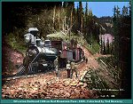
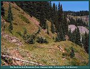

| The Silverton Railroad was the first of three railroads built to tap the mineral resources in the mines above Silverton. The mining history of Silverton had its roots in the first prospectors that found their way over Stony Pass in the mid 1860's. The original party, headed by Captain Charles Baker, found color along the Animas River, which runs through Silverton. The first miners worked placer claims, then later had to resort to deep shaft mining to follow the minerals. As the mines went deeper, more expensive methods, and equipment, were required to keep the mines in production. As the cost of operation continued to rise, the need for economical transportation became very important. A railroad could provide the less expensive transportation required to keep cost down. |

|
Silverton, Colorado
1875 (139k) |

|
Silverton, Colorado
1876 (126k) |

|
View of Silverton at the turn of the century
(48k) |
| The natural person to build a railroad in Silverton was Otto Mears. Mears, a Russian immigrant at the age of 11, had constructed a vast network of toll roads throughout the San Juans. Mears system of toll roads totaled more than two hundred miles. The nickname, "Pathfinder of the San Juans," was given to Mears because of his great ability to build roads where others could not. The toll road system also gave Mears the capital, and much of roadbed, to build the Silverton Railroad. |

|
Chief Ouray seated with Otto Mears
(89k) |

|
Silverton, Colorado - pop. 100
Silverton had not been incorporated at this time. This is the same year Mears arrived to start building his toll roads. (Image m0033)(80k) |

|
Mears Toll Road
between Silverton and Ouray 1892 (Image 268) (175k) |
| The construction of the Silverton Railroad began in the summer of 1887. The toll road to Ouray, that Mears had built earlier, was used for the roadbed of the new line. As the founders of the Railroad held their first incorporation meetings, grand plans for the railroads future were made. A connection to Ouray, and the Denver and Rio Grande Railroad were planned, and also a connection to Lake City. Before the turn of the century, Lake City was a boom town. Larger than either Silverton or Ouray, Lake City had a population of 2500, and a connection with the Denver and Rio Grande Railroad. At the time each of the three Railroads in Silverton were incorporated, plans were made to connect with Lake City. |
| The importance of a connection with Lake City was a simple one. The distance to the Capitol city of Denver could be greatly reduced. The distance from Animas Forks to Lake City was only 17 miles by way of Denver Pass and Henson Creek. The distance to Denver could be reduced by 153 miles and 14 hours. If Silverton were connected with Ouray, the distance would be 106 miles less and four hours shorter. The above routes were never completed (the connection with Ouray was only stopped by the silver panic in 1893), but then most railroads of the time were never completed to their planned destinations. |

|
Lake City, above Animas Forks
was very prosperous and offered a lot of traffic to the Denver and Rio Grande Railroad (Image m0004)(132k) |
| The construction crews were hard at work through the end of 1887, and into the beginning of 1888. The first 6 miles to Burro Bridge were completed by Jan 28, 1888. The Silverton Railroad was engineered by one of the finest men available at the time. Charles W. Gibbs had been the Chief Engineer on the great Colorado Midland Railroad. Otto Mears enlisted his services to continue construction of the line past Burro Bridge. The construction from that point on, required many novel methods, and Gibbs was the man to implement them. Gibbs was never afraid to try something new, even when it went against orthodox railroad design. Even the mighty Denver and Rio Grande had declined the opportunity to build a railroad up Mineral Creek to Ouray. |
| As construction progressed up Mineral Creek, Gibbs built the first unusual feature on the Silverton Railroad. After the Railroad arrived at the town of Chattanooga, a steep grade was required to continue up the canyon. The roadbed had to make a rise of 550 in 1/4 of a mile as the crow flies. Gibbs turned the line up Millcreek, and then out again with a 30-degree radius curve. The Loop was on a 5% grade, and required 1 3/4 miles of track to travel the above mentioned 1/4 mile. With the completion of the Chattanooga Loop, the minimum radius, and maximum grade for the railroad was established. Except for a few of the mine spurs in the Guston area, no steeper grade would be found on the Silverton. Gibbs was not afraid to leave out transition spirals or compensation for grades on curves. In one instance, the Railroad went from dead level, to a 5% grade, in less than 60 feet. I believe Gibbs would have made a great model railroader with those design methods. |

|
Chattanooga, Colorado
1887 (image m0022)(89k) |

|
Chattanooga, Colorado
September, 1996 (128k) |
| When construction was complete through Sheridan Junction (Red Mountain Pass), Red Mountain Town became the end of track. Red Mountain Town was the site of The National Bell, and Hero Mines. Located in a hollow, between two steep sloping mountains, the site had a definite lack of real estate for railroad building. The way the Railroad came into town required the locomotive to be turned when it left. Gibbs found he would have no room for a balloon loop, and the ground was much too hard for a turntable to be excavated. To complicate things, Red Mountain Creek ran down the center of the town site. Gibbs solution was to use a wye, with short tail tracks, that could only handle a locomotive and two cars. This required some very interesting switching moves by the train crews. When he had finished, the only place left for the new depot was in the middle of the wye. The fact that the stream would run under the depot did not bother Gibbs at all. |

|
Photograph of the original location of Red Mountain Town before it was moved due to very swampy conditions at this site.
(Image m0053)(139k) |

|
Red Mountain Town
1888 (Image m0052)(95k) |

|
Red Mountain Town
school House 1888 (Image m0051)(82k) |

|
Red Mountain Town
Close up view of the school house 1888 (Image m0044)(98k) |

|
Red Mountain Town viewed from the Corkscrew Gulch trail. You can see the National Belle Mine ruins on the "Knob" (106k) |

|
The Knob at the site of Red Mountain Town
1996 (78k) |

|
The Knob at the site of Red Mountain Town
1996 (77k) |
| The last innovation Gibbs installed on the Silverton Railroad was the Corkscrew Gulch Turntable. Originally, as the Railroad descended from the Guston Mine into Ironton, a switchback had been used. As time went on, the switch back proved unworkable for safety reasons. Trains on the Silverton Railroad were required to run locomotive first down hill, to prevent runaways. To apply this rule, locomotives had to run all the way down to Ironton to run around their train. Gibbs Solution was a 50-foot turntable, installed on the leg of the switch back. He covered the turntable with a large wooden structure that resembled a circus big top, to keep the apparatus free of snow. |
| The following process was used to get the locomotive on the downhill side of the train. The train would stop above the turntable. The locomotive then run onto the turntable where it was turned. It then exited out the other leg of the switchback. The train was then run by gravity through the turntable, and stopped on the tail of the switch back. The locomotive was then backed into the waiting train and after, proceeded down grade locomotive first. The most interesting part of this operation was that the train could be run onto the tail of the switchback by gravity from either direction. I would have liked to have seen that in practice. |

|
Corkscrew Gulch Turntable
Silverton Railroad locomotive #100 1890 (Image m0009)(222k) |
| The Silverton Railroad was completed to the town of Albany on September 20,1889. Albany was as far up the canyon as the line went. The Silverton would never reach Ouray due to the insurmountable grade from Albany to Ouray. This did not stop Mears, who planned a new electric railway, that would have 7% grades, 35 Degree curves, a tunnel, and a complete spiral loop. His plans were interrupted by the Silver Panic of 1893.The Silverton never achieved its goal of connecting with Lake City either. A two-mile branch to the Silver Lake mill was built and would later become the beginnings of the Silverton Northern Railroad. |

|
Silverton Railroad #100 on Red Mountain Pass
1888 (Image m00443)(216k) |
|
 |
Silverton Railroad #100 on Red Mountain Pass
1888 Colorization by Ted Kierscey - Awesome! (Image mx00443)(216k) |
|
 |
The Knob on Red Mountain Pass - Location of photo m00443
Summer of 2006 Ted Kierscey Collection! (Image mz00443)(216k) |

|
Rio Grande Southern #5 (formerly D&RG "Frying Pan") at Red Mountain Pass
(Image m00442)(106k) |

|
Silverton, Colorado
photographed in 1890 (Image m0046)(106k) |
| Over its lifetime, the Silverton Railroad never owned much equipment. The total equipment owned by all three lines only totaled 79 pieces. The Silverton Railroad leased more locomotives than it owned, and only purchased one new locomotive. The other two locomotives to see service on the Silverton were second hand Denver and Rio Grande locomotives. The first locomotive the Silverton purchased was #100, a class 60, 2-8-0. Locomotive #100 was built from the parts of two used Denver and Rio Grande locomotives. The running gear came from former Denver and Rio Grande locomotive # 42, the Anglo Saxon. The boiler came from former Denver and Rio Grande locomotive # 283. The locomotive was assembled in the Denver shops, and delivered on November 2nd, 1887. After many years of use, #100 was sent to the RIP track, where it was used for parts. It was later scrapped along with SG&NRR #32 in 1923. |
| The Silverton's' second locomotive was purchased new from the Lima Machine Works. The locomotive was a class 37-2, 2 truck, 37 ton shay geared locomotive. It was given road # 269 and named the "Guston." #269 was only the third shay to see service in Colorado at the time it was purchased. The new shay had a bit of a detour before it arrived on the Silverton Railroad. After its purchase, Mears immediately put it to work constructing the Rio Grande Southern. When the work was completed on the RGS, the shay was turned over to the Silverton Railroad. The shay only spent 11 months, of its nine years in the San Juans, on the Silverton. The Shay was on the roster of the Silverton from December 19, 1891 until November 27, 1892. At the end of that time, #269 went back to the RGS in trade for the Silverton's third locomotive #101. |
| #101 was a class 56, 2-8-0, and was the former Denver and Rio Grande # 79, called the "LaPlata." Like locomotive #100, she still had many years left in her when acquired by the Silverton Railroad. While in the service of the RGS, she wore # 34,and as mentioned above, was traded for the Silverton's #269. Apparently #269 was all pull and no go. The tractive effort of the Shay was very useful on the steep grades of the Silverton Railroad, but the top speed was much to slow. # 269 was sent to Rico on the Enterprise branch. Much of the time, the Silverton got by with leased equipment from The Denver and Rio Grande. During the roads history, ten Denver and Rio Grande locomotives were used on the Silverton. |
| The rolling stock of the Silverton was made up of two combination cars and one baggage car. The combination baggage-chair car "Red Mountain," and Baggage car #5, were purchased from the Denver and Rio Grande in 1887. In 1890, a used coach, the "Yankee Girl," was purchased from the Denver and Rio Grande. It was later converted to a combination baggage-chair car in 1896. In the spring of 1891, snow flanger #3 was purchased. It is not plain if it was new or used, but it came from the Denver and Rio Grande. In 1892, fifty 3rd hand box cars were purchased, but only 37 were ever delivered. They were twenty-four foot, ten ton capacity cars, that came from the Denver and Rio Grande and RGW. The last piece of equipment to be purchased by the Silverton, was a four-wheel bobber caboose. It too came from the Denver and Rio Grande, and was the former #0516. It received road #17 while in service on the Silverton. |

|
Remains of SRR Combine
'Red Mountain' at Tefft Spur (Image m0059)(85k) |
| In the days before the railroad, the mines around Silverton were doing a booming business. The big producers were the Yankee Girl and Guston Mines. After the completion of the Silverton Railroad, production increased even more. The Red Mountain Mining District had several large mines, which produced much traffic for the new railroad. In 1890, the Guston group of mines were very prosperous. The town of Guston had three-hundred and thirty-two residence in the winter and over one-thousand during the summer months. The mines in the Red Mountain District were shipping 20,000 to 25,000 tons of ore out, and 15,000 tons of coal and materials in. The coal for the mines was obtained from the mines at Porter, Hesperus, and Perins Peak. These mines would later be located along the right-of-way of the Rio Grande Southern Railroad which was in the formative stages at the time. |
| With all of this traffic, the Silverton Railroad was very busy, and relied on several leased locomotives from the Denver and Rio Grande Railroad. Over the life of the railroad, ten different Denver and Rio Grande locomotives served on the Silverton Railroad. Due to the harsh winters in the San Juans, the railroad could only be operated from mid May until the end of January. The mines continued to work year round, and stock piled ore in the months the railroad was idle. The only year the Silverton Railroad operated year round was 1892. |

|
Miners at the Yankee Girl Mine
Guston, Colorado 1888 Otto Mears and CW Gibbs were still pushing the new Silverton Railroad up from Burro Bridge to Red Mountain Pass (Image m0030)(185k) |

|
Silverton Railroad #100 at the Yankee Girl Mine - Guston, Colorado
1889 (Image m00445)(186k) |
| The first two years of the railroad were very good ones. A fire in Red Mountain Town, in 1892, was the only disaster to hit the area. The fire started in the Red Mountain Hotel, and succeeded in burning most of the town. The Silverton Railroad facilities survived the conflagration. The area mines continued to produce, and silver prices stayed at profitable levels until the Silver Panic of 1893. |
| In the summer of 1893, Congress repealed the Sherman Silver Purchase act of 1890. This piece of legislation required the U.S. Mint to make sixteen silver coins for each gold coin produced. The repeal caused silver prices to plummet. This sent a shock wave through all of the silver camps in the west, and brought many to their knees. The rest of 1893, and most of 1894, were very tough for the Silverton Railroad. Cash flow was so bad on the Rio Grande Southern, that it went into receivership, and Otto Mears was forced out of the company. |

|
Red Mountain Town photographed during the winter of 1891-1892. Many of these buildings where destroyed in the fire of 1893.
(Image m00420)(115k) |

|
Red Mountain Town photographed during the winter of 1891-1892. Many of these buildings where destroyed in the fire of 1893. I think this image was taken the same day as image M00420.
(Image m00425)(115k) |
| As 1895 dawned, mining started to improve in the Silverton area. Attention was focused on the anticipated increase in traffic from the mines to the south of Silverton. Otto Mears used the two-mile branch to the Silver Lake Mill as the start of a new railroad, called the Silverton Northern. The line would follow his toll road up to Eureka, Animas Forks, and was anticipated to go to Lake City. |

|
Eureka, Colorado in 1889
looking towards Animas Forks The same year CW Gibbs began his survey for SN RR (Image m0032)(107k) |
| Shipments on the Silverton were not as frequent as they had been in the past. The Red Mountain, and Guston mines, were in a slow state of decline that eventually saw many of them close in the spring of 1897. The water level in the mines caused the operations to be unprofitable for the owners. As these mines closed, the last 7 ½ miles of the Silverton from Red Mountain to Ironton were closed. The materials were used to keep the rest of the railroad open in the following years. By 1898, the Yankee Girl mine was closed due to continuing water problems. |
| It was at this time the Silverton Gladstone and Northerly was incorporated. Attention shifted to the Silverton Gladstone and Northerly, and the Silverton Northern Railroad. The mines on these two lines were doing relatively well for the times. As the mines continued to close on the Silverton Railroad, things looked bleak. On August 18, 1899, the Silverton Railroad went into receivership. The next five years were very slow on the Silverton, and during this time, more money was generated providing locomotives and engine crews to the Silverton Northern. On November 3, 1904, the Silverton Railroad ceased to exist. The railroad was reorganized as the Silverton Railway, and all assets of the Silverton Railroad were transferred to the Silverton Railway. |

|
Silverton,Colorado
1900 (Image 267) (142k) |
| In 1906, the Silverton Railway was reopened from Red Mountain to Ironton, and leased to The Red Mountain Railroad Mining and Smelting Company (see stock certificate below). This company had started a project to drain the mines in the district. In 1904, work began on the Joker Tunnel, a 4800-foot bore, that went from the level of Red Mountain Creek to the Genessee-Vanderbuilt mine. There were also branches that went to the Guston, Robinson, and Yankee Girl Mines. |

|

|
Joker Tunnel Boarding House
The Tunnel is just out of view 1996 (97k) |

|
Joker Tunnel Boarding House
1996 (117k) |
| The Tunnel was completed in 1907. The Red Mountain District saw an immediate improvement in Mining activity. Not only did the tunnel drain the mines of the water that had caused their closure, but it simplified operations. Now the ore could be shipped from the bottom of the mines, rather than being lifted out the top, and trammed down to the railroad. At the time the Silverton only operated as far as the mouth of the Joker Tunnel. |
| When the first branch of the Joker Tunnel was completed to the Yankee Girl mine, which had been closed since 1894, mining activity began immediately. As the other mines in the district were drained things began to look up for the Silverton Railway. There were even plans to build substantial new locomotive servicing facilities, patterned after those on the Denver and Rio Grande at Salida. |
| Otto Mears regained control of the Silverton in 1909. Having returned in 1904 to run his Colorado properties, Mears was full of grand Ideas. He decided he needed more passenger equipment. Mears purchased a second hand coach from the Denver and Rio Grande, and gave it road # 4. Improvements in the infrastructure continued, but on August 10, 1909 an unprecedented rain storm hit the region, and washed out the Silverton Branch of the Denver and Rio Grande at the Needleton Tank. This isolated Silverton, until the line was reopened on September 4, 1909. |
| That very night, another storm passed through the area, and caused even more damaged than the previous one. The line was again closed until September 26th. This storm also reeked havoc with the other railroads in the region. Due to constant problems with wash outs, Mears purchased a self-propelled steam American Railroad Ditcher from American Hoist and Derrick Co. of St. Paul, MN. While the area railroads were out of commission, ore was stock piled at the mines. The owners of the Gold Prince mine had other problems with equipment also at this time. Mears offered to manage the properties and did so until 1916. |
| As Mears continued to consolidated control of his railroads, he decided to retire the two oldest pieces of equipment on the roster. Silverton #100, and Silverton Gladstone and Northerly #32 were pushed onto the RIP track in Silverton. The two locomotives provided parts to keep the others in service then were later scrapped. |
| The fall of 1910 was again very wet. All four railroads operating out of Silverton were severely damaged by wash outs, and slides. Although the damaged to Mears' railroads totaled $25,000.00, he decided to repair the damage and continue operations. Mears also offered to do some work in repairing the Silverton branch of the Denver and Rio Grande. |
| As the repairs were completed, and operations got back to normal, Mears continued to buy mining operations and manage others. His partnership in the Iowa-Tiger Mine provided him a very good return on his investment. Even with this new success, time, and business pressures got the better of Mears. At the age of 71, he entered semi-retirement in California. His son-in-law, James Pitcher, took over control of daily operations of all three railroads at this time. |
| The last 10 years of the Silverton Railway were rather slow and uneventful. Only one daily passenger train ran over the line, as far as the Red Mountain District. Most of the mines were loading their ore at the mouth of the Joker Tunnel. World War One revived mining, but also saw the control of the railroad turned over to the Federal Government. After the war, the fortunes of the Silverton Railway turned from bad to worse. In 1919, only forty-nine trips were made over the line with ten of these being work trains. 1920 was worse, with only thirty-two trips logged, half of these being work trains. |
| In 1921, there were not any trips made over the railroad. On August 9, 1921, a petition was submitted to abandon the railroad. The petition was denied at that time, but another one, submitted on June 13, 1922, was approved on June 17, four days later. This brought an end to the Silverton Railway . All equipment was transferred to the Silverton Northern, and the right of way was transferred to San Jaun County and the Colorado State Highway Departments. Much of today's "Million Dollar Highway" is on the roadbed of the Silverton Railroad, or Mears' original toll road to Ouray. |
| Silverton is an enjoyable place to visit today. The town retains much of its atmosphere, and the merchants are quite friendly. If you enjoy off highway travel, then this is the place. Stop in the office of The Silverton Miner , and obtain one of their topographical maps. With this in hand, set out to explore the many dirt roads, and jeep trails, in the mountains above Silverton. Many historic sites are still recognizable. It is just a short trip to Animas Forks, or Gladstone to the south. If you head north, the road to Ouray is paved, but do not miss the many turn offs. The road over Ophir Pass is great, as is the one over Black Bear Pass. Make sure to check in with the locals for road conditions, because these trails can turn ugly depending on their current condition. Spending a day up in the high county, away from civilization, can restore your peace of mind, and you will see some great scenery. If you have made a trip to Silverton, let me know about it. Enjoy! |
| Road Number | Name | Type | Engine Weight | Tractive Effort | Drivers | Origin and History |
| #100 | Ouray | 2-8-0 | 58,600 | 14,474 | 36" | Re-built from running gear of former Denver and Rio Grande #42 and the boiler of former Denver and Rio Grande #283. Cost when purchased $6500.00. Scrapped in Silverton in 1923. |
| #269 | Guston | 0-4-4-0 T Shay | 74,000 | 16,900 | 29 1/2" | Purchased new from Lima Machine Works. In service on the RGS from April, 1890 to December, 1891. In service on SRR from December, 1891 to November, 1892. Traded to RGS for RGS #34 in November of 1892. Sold to RGS July, 1899 |
| #101 | none | 2-8-0 | 56,200 | 13,025 | 36" | Former Denver and Rio Grande class 56 #79 "the LaPlata". Sold to RGS and became #34 in November of 1891. Cost $1200.00. Received in trade from RGS in exchange for Shay #269 in December of 1892. Transferred to SNRR in December of 1896 to become their #1 |